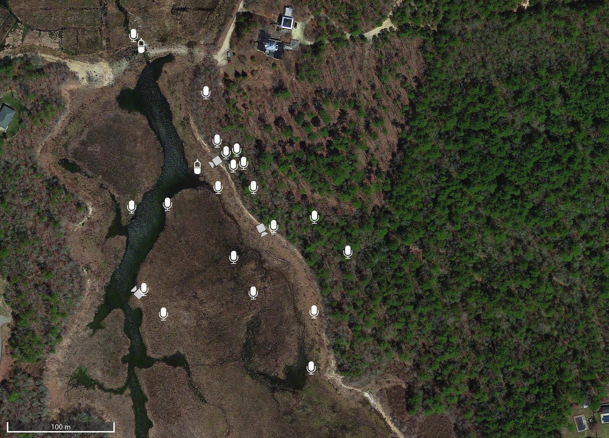
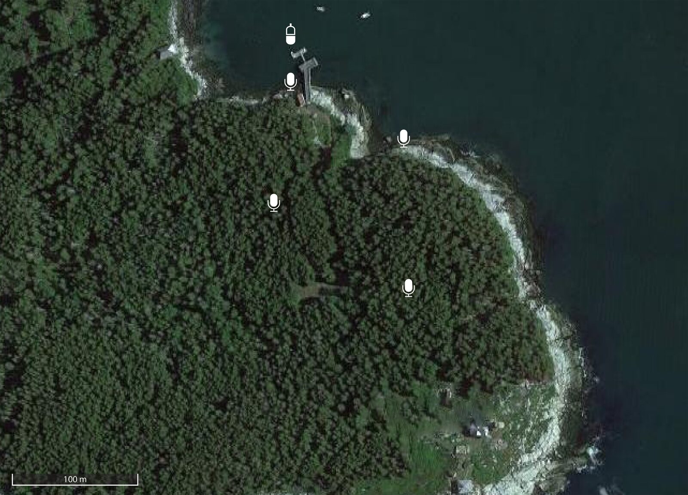
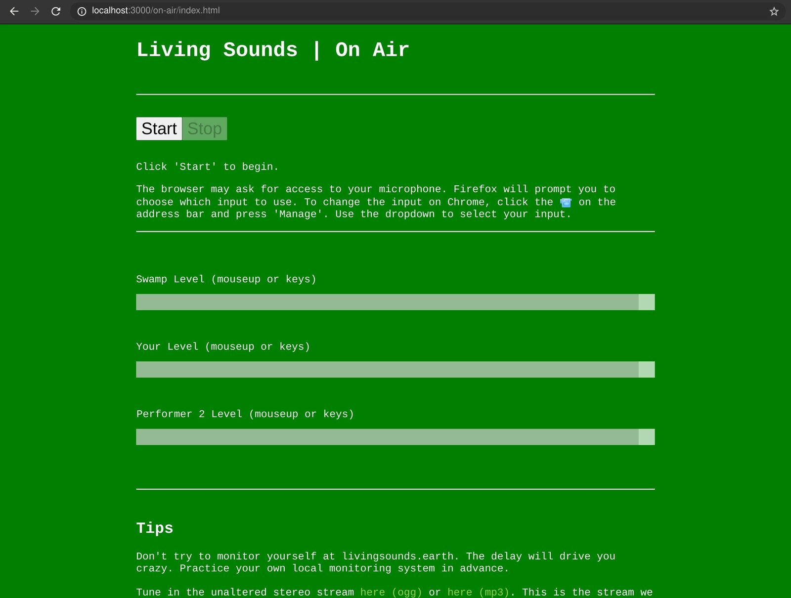
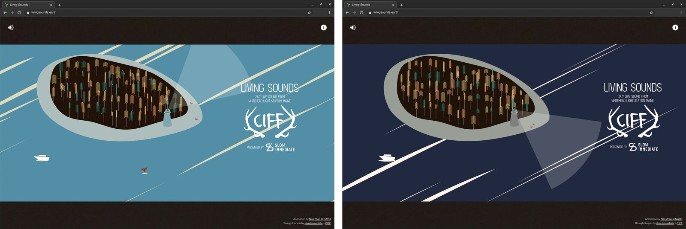
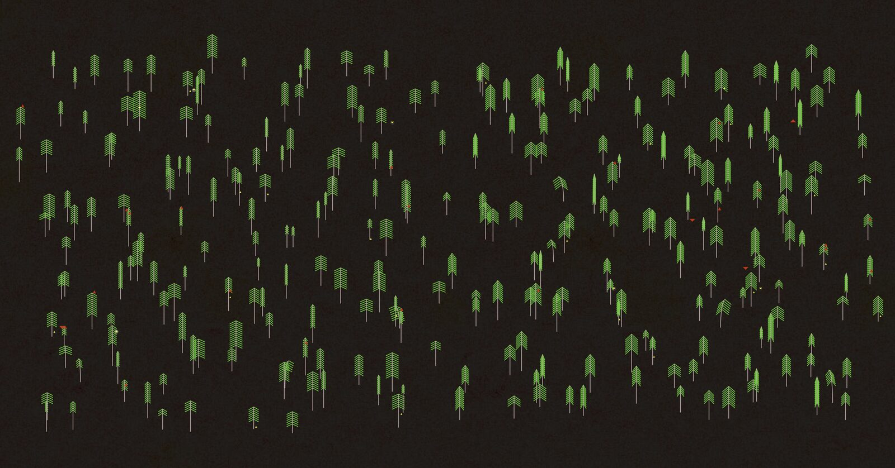

Living Sounds: Live Nature Sound as Online Performance Space
Abstract
This paper presents Living Sounds, an internet radio station and online venue hosted by nature. The virtual space is animated by live sound from a restored wetland wildlife sanctuary, spatially mixed from dozens of 24/7 streaming microphones across the landscape. The station’s guests are invited artists and others whose performances are responsive to and contingent upon the ever-changing environmental sound. Subtle, sound-active drawings by different visual designers anchor the one-page website. Using low latency, high fidelity WebRTC, our system allows guests to mix themselves in, remix the raw nature streams, or run our multichannel sources fully through their own processors. Created in early 2020 in response to the locked down conditions of the COVID-19 pandemic, the site became a virtual oasis, with usage data showing long duration visits. In collaboration with several festivals that went online in 2020, programmed live content included music, storytelling, and guided meditation. One festival commissioned a local microphone installation, resulting in a second nature source for the station: 5-channels of sound from a small Maine island. Catalyzed by recent events, when many have been separated from environments of inspiration and restoration, we propose Living Sounds as both a virtual nature space for cohabitation and a new kind of contingent online venue.
Author Keywords
Internet radio, nature sound, livestream, performance
CCS Concepts
•Applied computing → Sound and music computing; Performing arts; •Information systems → World Wide Web; Web applications;
Introduction
In 2020, performance venues all over the world went dark amidst the COVID-19 pandemic. For performing artists of all stripes, live streams and the online spaces built around them became the only safe outlets through which to connect to audiences. Among those are social video platforms like Zoom, Twitch, and Instagram Live, impromptu virtual venues characterized by signature compression artifacts and backdrops of intimate home life. Alternatively, an array of commercial platforms, such as Veeps and Push Live, serve as virtual equivalents of arena stages. On the spectrum between Zoom events and elaborately staged productions, the online live performance format is open for experimentation.
In this paper, we present Living Sounds, an online venue and internet radio station based around the idea of live nature sound as a permanent, round-the-clock host, drawn from microphones distributed across a landscape. When Living Sounds programming is ON AIR, guest performers are invited to respond to, incorporate, and remix the nature sound. At other times, the nature streams continue, offering visitors a restorative soundscape with which to cohabitate during long periods of pandemic home confinement.
We had previously designed an elaborate acoustic ecology and virtual presence system made up of dozens of microphones installed on a wetland restoration area called the Tidmarsh Wildlife Sanctuary [1]. When the pandemic struck, many people in cities found themselves stuck indoors, suddenly deprived of access to nature when we needed it most. The multichannel audio streams were available online through research interfaces, but had not been pushed to a wider public.
In mid-March 2020, we built a website to host and share the sounds of the wetlands in springtime, and commissioned two designers to create subtle, sound-responsive animations. We paired the visuals with a real-time stereo mix of the nature sound, and shared the site with friends. The responses we received demonstrated a clear need for the connection to nature we were offering. One of the remarkable aspects of the experience was that small, otherwise inconsequential events, such as a bumblebee flying around a microphone, could bring distant, isolated listeners together in the continuously unfolding story. At the same time, many people were simultaneously experiencing “Zoom fatigue” [2] and waning interest in online productions, which, without the exciting contingencies and heightened emotions of in-person gatherings, could feel rote. This led us to imagine a new use for Living Sounds, leveraging the dynamic, even aleatoric qualities inherent to living ecosystems: a refreshing space to perform and listen together in a confined and isolating time.
Related Work
Many sound artists situate their digital music practices outdoors and in natural environments, not only finding context or inspiration there but also experimenting with the relationship between natural ecosystems and digital music [3][4]. Many contemporary composers have drawn source material from field recordings and created in open dialogue with natural ecosystems, among them Pauline Oliveros, Hildegard Westerkamp, and David Rothenberg.
Closely related to Living Sounds are music and installation works that engage remotely with real-time nature as a muse, collaborator, virtual setting, and/or generative source. For example, Ryuchii Sakamoto, et al. created Forest Symphony using sensors that measured the bioelectric potential of trees around the world to drive a generative music installation in a gallery [5]. Other generative music frameworks have mixed in live streams of nature sound directly, such as SensorChimes, an environmental sonification library which also incorporates the same wetland audio sources as Living Sounds, among other data sources [6]. Only a few open microphone streams are online continuously. Some of them are listed on SoundMap, a project from Locus Sonus [7]. To the best of our knowledge, besides the Living Sounds audio, no other publicly-accessible audio streams are mixed from many microphone sources distributed across a contiguous landscape.
Over the last year, other projects have experimented with the online live performance format. Zoom theater, in which audiences watch and mingle with performers on the video platform, has been the most common form. Numerous examples are featured by the Festival of Live Digital Art (FOLDA) [8]. Most of these examples are designed around a performance, rather than acting as venues themselves. Closer to the Living Sounds model, artist Lara Lewison created a detailed, multi-room 3D model of her childhood dollhouse and began regularly hosting live events there in 2020, including music performance [9].
In comparison to other experimental online performance spaces, Living Sounds is unique in maintaining a permanent, live connection to a physical place as a way to anchor and animate intermittent virtual performances. It is still early to formally measure any of these concepts against one another. In our view, any and all experimentation is good for artists in the present moment. The NIME community will gain additional insights as physical venues begin to reopen, integrating aspects of these experiments into regular practice.
System
Living Sounds is made up of three main system modules. The first is the physical installation, where sound is collected by weatherproof microphones, lightly processed, recorded, and streamed. The second module is a live interface and mixing server, which offers performers various ways of engaging with the nature sound: adding themselves into an existing stereo mix, remixing the raw audio, or running the multichannel sources fully through their own processors before feeding audio back. The third module is the web browser client interface through which the public tunes in.
Physical Installations
Two natural landscapes have animated Living Sounds over the past year. The main audio stream comes from a restored wetland called the Tidmarsh Wildlife Sanctuary, and is one part of a larger environmental sensing and virtual presence research project. This paper will only briefly describe the systems that capture sound at Tidmarsh, which are covered extensively in [1][10][11]. Image 1 shows the placement of the microphone and hydrophone installation there. The audio is unique as a spatial mix of many microphones covering multiple micro-habitats over a large, contiguous area. This arrangement gives the sound a detailed and crisp character that heightens the sense of activity and possibility: an animal scratching itself on a tree, a bird flapping its wings, a bee flying past, a backdrop of crickets. Together, these events tell the active and engaging story of an ecosystem in continual, dynamic formation.


Permanent microphones and hydrophones in a restored wetland are sources for the primary live mix.
The microphones are based around Primo EM-272 omnidirectional electret condenser capsules and custom electronics. The electronics are housed in aluminum tubes, and potted in silicone for weatherproofing, with only the front of the capsule protruding. Hydrophones are made the same way, but fully potted in silicone. The microphones are wired over distances of up to 300m to a central location, using outdoor-rated CAT6 cables repurposed to carry multichannel analog audio. The audio is digitized with an audio interface, equalized and limited, and encoded into a 30-channel Ogg Opus stream and stereo mix. An Icecast server in the cloud manages recording, transcoding, and re-streaming to clients.


4 microphones and 1 hydrophone were installed on a Maine island as live sources for a 2-week festival.
In October 2020, we were commissioned to install a smaller-scale system of 4 microphones and 1 hydrophone on a small, historic lighthouse island in Maine called Whitehead Light Station. The microphones were distributed on the island to capture a mix of the quiet forest and the crashing ocean waves. During that period, Living Sounds switched from the wetlands to the island. Image 2 shows the placement of microphones for the island installation, which ran for 2 continuous weeks of streaming and recording.
Performer Interface and Mixing
We developed two different systems for live contributors to connect with the system: one controlled by the performers themselves and the other mixed centrally, similar to a traditional radio station. Both systems require performers run a modern web browser to relay audio via WebRTC, and audio routing software (such as Jack Audio Connection Kit) to get audio from their digital audio workstation (DAW) or live microphone into the browser. In both configurations, the performer may also independently connect to and monitor or process either the stereo or multichannel live nature feeds. For performers who wish to incorporate the raw, multichannel nature feeds, we provide a patched build of the media player software mpv that allows for streams of up to 30 channels; to our knowledge, no pre-built software exists allowing the online decoding of that many channels in an audio stream.
The performer-managed system uses a NodeJS web server application we developed which allows browser clients to connect via a private, ‘backstage’ interface and open Opus-encoded WebRTC audio channels. The interface is shown in Image 3. Connecting automatically creates a new central mixer input on the NodeJS application and associated controls for the client. For optimal fidelity, the channel defaults to a stereo bit rate of 320 kbps. The NodeJS application decodes the live nature streams and the performers’ WebRTC audio streams, mixes them into a single stereo output, and re-encodes the mix for streaming back to the Icecast server. Using this approach, multiple performers at different locations connecting at one time are automatically mixed together, and can set their levels. A simple mixing interface is offered in each performer’s web browser.


A basic ‘backstage’ web interface allows contributors to submit streams from any standards-compliant web browser and collaboratively set levels.
An alternative, centrally-managed version of our live system relies on a free, high-quality web-based audio conference platform called SourceConnect Now [12]. Under the hood, that platform works in much the same way as our NodeJS server, managing peer-to-peer WebRTC audio connections with a user-selectable bit rate of up to 512 kpbs. On the central operator side, multi-party audio is fed from the operator’s web client into the Ardour DAW using Jack Audio, processed, and mixed in the DAW before being reencoded using Darkice and relayed to the public-facing Icecast server. This flow is designed for a more traditional radio program style, where an emcee hosts and welcomes guests for interviews. In either case, clients are switched over to the nature and live performance mix when programming begins, and back to the solo nature stream afterwards.
Web Client and Visual Designs


Ambient, sound-activated visual animations on the public website, shown here reflecting day and night in their color palettes, encourage active listening and prolonged cohabitation.
Public access to Living Sounds is provided through a website that hosts the live streams and announces scheduled programming. We commissioned two different designers to create ambient visual animations that would reflect the natural environment and direct focus to the listening experience. Image 4 shows one of those designs, by Nan Zhao (Nayo Studio), created for our Maine island nature stream. The animated designs use a consistent visual language across multiple nature installations. The site uses Web Audio for basic audio spectral analysis to drive the ambient dynamics: abstract birds and bugs spawn differently throughout the day, and trees sway in the wind.


The animated designs use a consistent visual language across multiple nature installations, an ambient backdrop to listening.
Events and Discussion
Several formerly in-person venues and festivals invited Living Sounds to anchor or expand their virtual programming, presented both as a work in itself and as a performance space for other festival artists. Live programming has featured music and sound art, children’s stories, interviews, and guided meditation. The music works in particular reflect the various ways that the platform can be creatively leveraged.
Audio 1, below, excerpts performances and other presentations from one hosted evening of programming, in August 2020. Late summer crickets, audible throughout, were the defining characteristic of the wetland soundscape at that time of day.
Short excerpts from an evening of live performances and other programming on Living Sounds in August 2020, presented by Currents New Media Festival and curated by the authors.
One composer, Matthew McCorkle, drew on recordings from one year earlier, a continuous week from our multiyear archive of wetland sounds, to create a hybrid piece that would live mix the sounds of the year before at the exact same time with the sounds of the present moment. His work distilled hyper-real, ear-tickling moments from the corpus of field recordings, and slowly faded between heavily processed samples and the live nature stream.
Another composer, Tommy Martinez, used modular and software synthesizers to vibe together with the nature stream, creating dynamic and varied responses to the sound of the swamp: for example, by abstractly mimicking and interpreting the ebb and flow of crickets on a summer night.
Artist collective Morakana adapted an existing performance piece from their repertoire for Living Sounds. Their piece mixed generative music derived from real-time microbial activity with hyper-processed live vocals, bringing a micro scale living work into dialogue with the large-scale wetlands and forest on the platform.
These examples exemplify different ways of creatively engaging with the Living Sounds material: building sample-based compositions from the extensive archive of recordings and/or live mixing, live patching, and vocalizing in response to the wildlife soundscape of the present moment. In post-performance interviews, several artists reflected on how different the soundscapes were between morning rehearsals and evening performances, demanding particular sensitivity in the live moments. We did not evaluate audience experiences of these dynamics, a gap we hope to bridge in future work.
In [13], Gurevich and Fyans theorize an ecological view of performer-system-audience relationships in digital music interaction. They argue that diverse practices within digital music are enabling new forms of spectatorship and vice versa. Of course, the virtual space matters in this ecology, even if it ends up as only a temporary context for performance. In [4], Greie-Ripatti and Bovermann describe bringing their technological creative practices into a remote tundra as a way to instigate musical conversations between themselves as players and the imagined wilderness. They trace the origins of musical culture to the outdoors, and set off on a romantic, experimental search to re-contextualize their practice there. In theory and practice, respectively, against confinement, these works speak to a shared drive to search out new ecosystems for composition and performance.
This year, we were cut off from public environments. Often our shared online spaces, essentially repurposed virtual meeting tools, have felt unreal and stagnant. In creating Living Sounds, we set out first to offer a live sonic space of restorative connection to nature. Anonymized usage data from the Spring showed unusually long duration visits for a single page website with no links, averaging almost 15 minutes. To us, this spoke to a deep need for the service we were offering, particularly in that moment.
From there, we evolved the website into a nature-hosted performance environment in which, by design, every moment would be different from the last. On Living Sounds, contributors and listeners both wouldn’t know what was going to happen next. We hope these efforts, linked to other, quarantine-inspired experimental performance platforms, will form a genre of online live spaces that find new ways to channel and celebrate natural environments, and the energizing contingencies they bring.
Acknowledgments
This project was made possible by the Living Observatory (LO), a Boston-based non-profit organization founded and led by Glorianna Davenport. LO is dedicated to helping link the science, practice, and public perception of ecological restoration. The wetland microphone network is part of a larger research project of the MIT Media Lab Responsive Environments Group, led principally by Brian Mayton, Gershon Dublon, and Spencer Russell. Thanks to Living Sounds guests Tommy Martinez, Matthew McCorkle, Taylor Levy, Che-Wei Wang, Tiri Kananuruk, Sebastian Morales, and Mariya Dimov. Our venue and festival presenters have been Pioneer Works (Brooklyn), Currents New Media (Santa Fe), Points North Institute (Maine), and SPRINT Milano.
Compliance with Ethical Standards
Living Sounds is a project of slow immediate, the NYC-based studio of the authors. We are aware of no conflicts of interest associated with either the project or the publication of this paper.
Citations
- ↩Mayton, B., Dublon, G., Russell, S., Lynch, E. F., Haddad, D. D., Ramasubramanian, V., … Paradiso, J. A. (2017). The Networked Sensory Landscape: Capturing and Experiencing Ecological Change Across Scales. Presence: Teleoperators and Virtual Environments, 26(2), 182–209. https://doi.org/10.1162/pres_a_00292
- ↩Lee, J. (2020, November 17). A Neuropsychological Exploration of Zoom Fatigue. Retrieved from https://www.psychiatrictimes.com/view/psychological-exploration-zoom-fatigue
- ↩Bulley, J., Jones, D., Forestry Commission England, & Sound and Music. (2016). Planning and Producing Artworks in the Natural Environment. Forestry Commission England and Sound and Music. https://doi.org/10.25602/GOLD.00024265
Greie-Ripatti, A., Bovermann, T. (2017). Instrumentality in sonic wild{er}ness. In Bovermann, T., Campo de, A., Egermann, H., Hardjowirogo, S.-I., Weinzierl, S. (Eds.), Musical instruments in the 21st Century (pp. 243–262). Singapore: Springer.
↩- ↩Sakamoto, R., Yasaki, Kenji., Takatani, S., Minami, T., & Mashimo, T. (2013). Forest Symphony. Retrieved from https://forestsymphony.ycam.jp/
- ↩Lynch, E. F., & Paradiso, J. A. (2016). SensorChimes: Musical Mapping for Sensor Networks. In proceedings of the 2016 conference on New Interfaces for Musical Expression (NIME ’16). Brisbane, Australia.
- ↩LocusStream Soundmap: Live Worldwide Open Microphones. (2020). Locus Sonus. Retrieved from http://locusonus.org/soundmap/051/
- ↩Festival of Live Digital Art (FOLDA). (2020). Retrieved from http://dollhouse.laar.world/performancespace/
- ↩Lewison, L. (2020). the dollhouse. Retrieved from http://dollhouse.laar.world/performancespace/
- ↩Dublon, G. (2018). Sensor(y) Landscapes : technologies for new perceptual sensibilities. Ph.D. thesis, Massachusetts Institute of Technology. Retrieved from https://dspace.mit.edu/handle/1721.1/119070
- ↩Mayton, B. (2020, September). Sensor networks for experience and ecology. Ph.D. thesis, Massachusetts Institute of Technology. Retrieved from https://dspace.mit.edu/handle/1721.1/129273
- ↩Source Elements: Source Connect Now. (2021). Retrieved from https://now.source-elements.com
- ↩Gurevich, M., & Cavan Fyans, A. (2011). Digital Musical Interactions: Performer–system relationships and their perception by spectators. Organised Sound, 16(2), 166–175. https://doi.org/10.1017/s1355771811000112